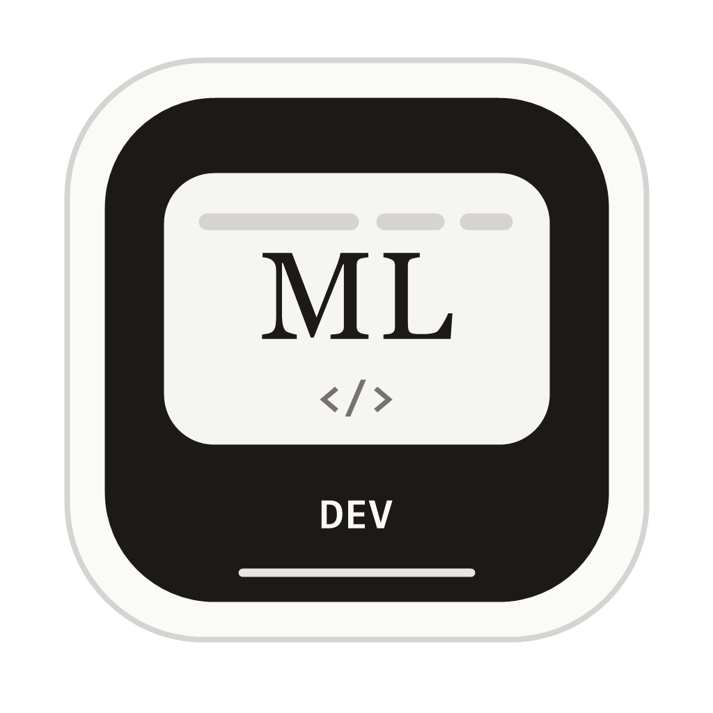

Finalidade
Manter um acervo simples e visual dos projetos que desenvolvo, estudo ou ajudo a estruturar ao longo da minha evolução profissional.

PORTFÓLIO PESSOAL
Sou Meigan Luiz, programador, desenvolvedor web e graduado em Análise e Desenvolvimento de Sistemas pela FSG. Atuo profissionalmente na Cocorico.live e mantenho este espaço como um registro pessoal dos projetos, estudos e aprendizados que constroem minha trajetória na área.
Manter um acervo simples e visual dos projetos que desenvolvo, estudo ou ajudo a estruturar ao longo da minha evolução profissional.
Minha atuação profissional acontece na Cocorico.live. Este portfólio é um espaço pessoal para registrar entregas, aprendizados e referências de trabalho.
Os projetos podem envolver WordPress, Loja Integrada, inteligência artificial, CSS, JavaScript, SEO, performance, organização visual e ajustes de conteúdo.
Cada projeto pode reunir link publicado, imagens desktop/mobile, tecnologias usadas, participação no processo e observações sobre a solução aplicada.